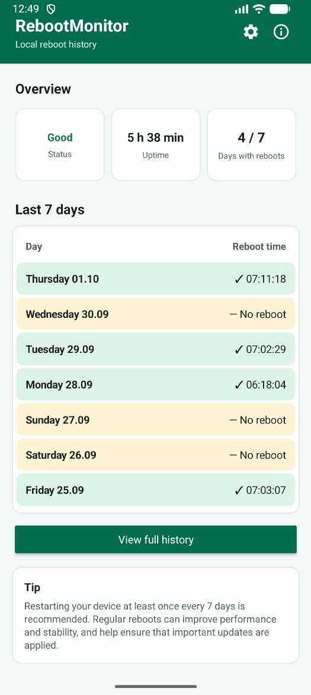
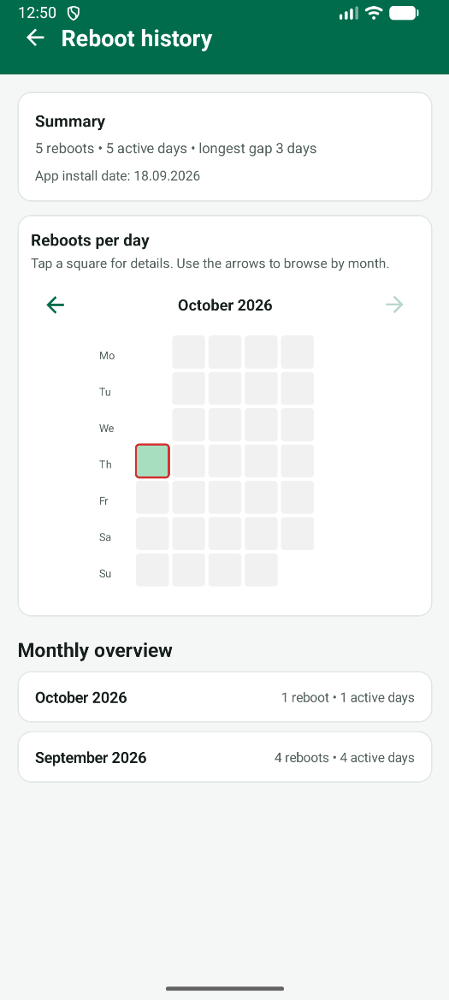
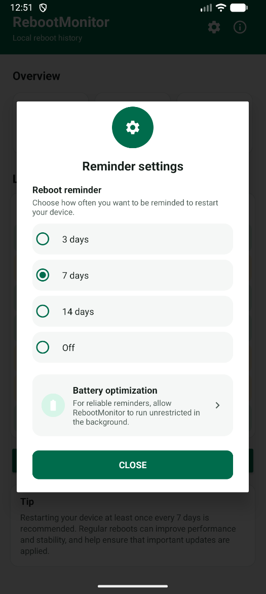
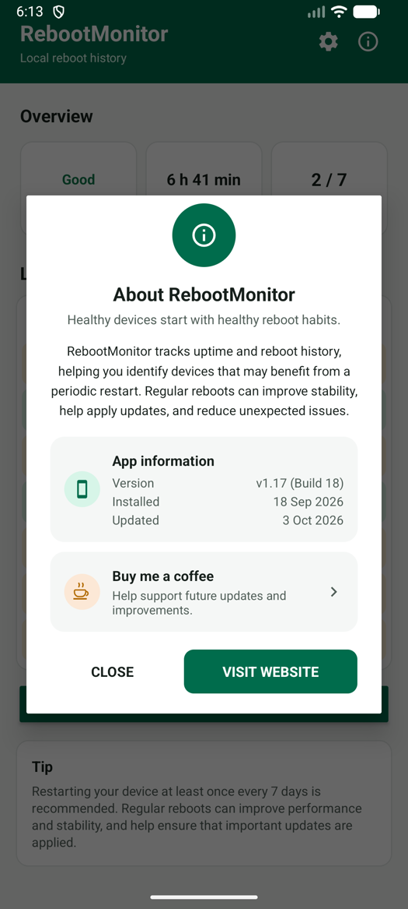

Why an Android reboot notification doesn't exist by default
There's no system notification for "this device could really use a restart." Android just keeps running, slower and less stable, until something forces the issue.
On a personal phone that usually means things quietly get worse — more lag, a flaky app, a battery that drains a bit faster — without an obvious cause. On a shared or managed device, nobody feels responsible for noticing at all, so weeks or months pass without a single restart.
RebootMonitor's Android reboot notification adds exactly what's missing: a simple, configurable reminder that appears once a device has genuinely gone too long without a reboot — set up once, then left alone.
Configurable interval
3, 7 (recommended) or 14 days — or turned off entirely. One setting, chosen once.
A notification and a badge
A standard Android notification plus an app icon badge, impossible to miss and easy to act on.
Clears itself
No dismissing required. The moment the device restarts, the reminder resolves on its own.
Built to actually arrive
A one-tap shortcut to battery optimization settings, for the rare device that would otherwise delay it.
What the app looks like
One screen, four options, no ambiguity about what's currently active.




For a personal phone
- A gentle, occasional nudge — not a daily chore, not nagging. Most people are happy with the 7-day default.
- Prefer less interruption? Switch to 14 days, or turn the reminder off completely, in one tap.
- Everything stays on the device. No account, no cloud sync, nothing to configure beyond the interval itself.
For MDM-managed fleets
- Every shared or kiosk device gets its own voice, without a server-side dashboard an admin has to watch.
- Deployed via Microsoft Intune as a Managed Google Play app — see the Intune deployment guide.
- On Samsung fleets, an admin can manage battery optimization centrally through the Samsung Knox Service Plugin (OEMConfig), instead of relying on the in-app shortcut per device.
Most devices deliver the reminder fine on default battery settings. If one ever doesn't arrive as expected, the settings screen includes a direct shortcut to check or adjust it — no need to dig through Android's general app list. New to this? Follow the step-by-step guide with pictures or watch the 1-minute video for Samsung or Pixel and other phones.
Frequently asked questions
What triggers the reboot notification?
The device going without a restart for longer than the chosen interval: 3, 7 (recommended) or 14 days. It checks once a day in the background and clears itself automatically after the next reboot.
Can I turn the notification off?
Yes. The reminder is fully optional and can be switched off from the app's settings menu at any time, with no effect on the reboot history or dashboard.
Is this useful for a single personal phone, or only for managed fleets?
Both. On a personal phone it's a simple, private nudge to restart occasionally. On managed fleets it gives every device a voice, without needing a server-side dashboard to watch.
What if the notification doesn't arrive on some devices?
Aggressive battery management on some phones can delay background checks. A built-in shortcut jumps straight to that device's battery optimization settings, and on Samsung fleets an admin can manage the same setting centrally through Intune using the Samsung Knox Service Plugin. Our step-by-step guide shows exactly what to tap, and there are 1-minute videos for Samsung and Pixel and other phones too.
Can I check the status without opening the app?
Yes. RebootMonitor can be added as a homescreen widget that shows the current status, uptime and last reboot time at a glance. Watch the 1-minute video to see how to add it and stretch it to the full width of your phone.
Let your device tell you when it's time
One reminder, set once, that works the same whether it's your own phone or a thousand managed ones.